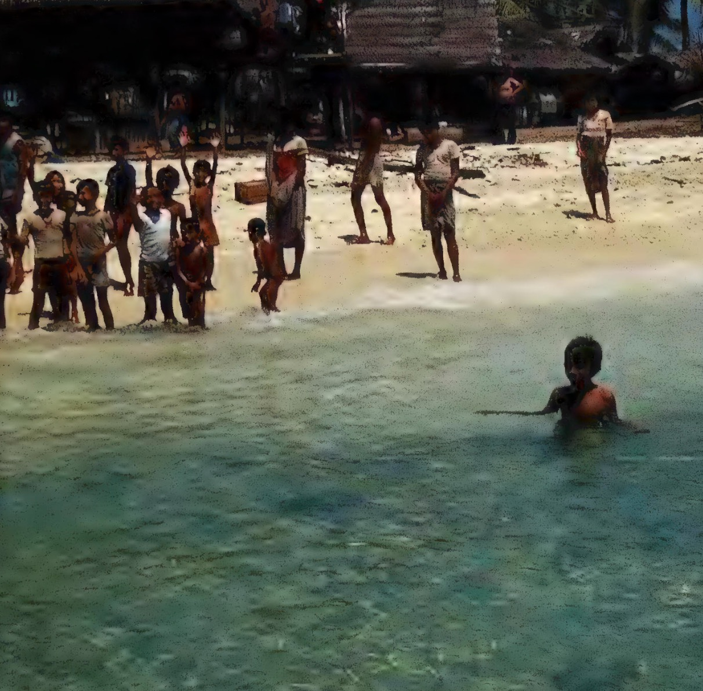

Gavin Young's Decision to Embark on Slow Boats to China
March 12, 2026

The Origin of the Idea
Gavin Young's journey began as "a simple idea: take a series of ships of many sizes and kinds; go where they lead for a few months; see what happens." This concept was an adaptation of the childhood dream of "Running Away to Sea," a yearning bred from tales of ships, stars, and isles where good men rest.
His fascination with the sea originated during childhood summers spent in what he describes as "the oldest-feeling, most soul-subduing and cosily creepy part of England" - the coastline between Devon's Hartland Point and Cornwall's Fire Point Beacon above Boscastle, known as the Wreckers' Coast. This rugged shoreline, with its history of shipwrecks and tales of smugglers and wreckers, planted the seeds of his maritime dreams.
As a boy, Young spent hours reading adventure tales by authors like Robert Louis Stevenson, Jack London, Captain Marryat, R. M. Ballantyne, and Crosbie Garstin. He obsessed over stories of Long John Silver and the Swiss Family Robinson, dreaming of seeing tall ships on the horizon bound for exotic destinations like the Indies, Hispaniola, and Cathay.
Early Sea Experience
The dream first gained substance shortly before his eighteenth birthday when he and a school friend signed on as 'deckie-learners' aboard the 500-ton coaster Northgate from Hull to Antwerp via the English Channel and Scheldt. Though modest, this voyage confirmed his passion for sea travel.
However, after this initial experience, "travel and war reporting intervened," delaying his long-held ambition for years. Only recently did the possibility of a longer sea journey reoccur to him, though he felt it was "almost too late" to pursue.
Overcoming Obstacles
Young faced significant skepticism when he began researching how to make his vision a reality:
- Travel Agent Discouragement: When he approached travel agents with his idea of hopping between ships to reach the Far East, they uniformly dismissed it as impossible. One agent told him: "It's impossible. Even for a single gent, it's utterly impossible." Another said he'd be "more of a nuisance than anything" traveling alone in an era of group tours.
- Industry Reality: He discovered that traditional British sea routes to the Far East had largely disappeared due to rising prices and cheaper air travel. P&O only maintained routes to Australia and New Zealand, and even those were limited.
- Shipping Company Insights: A meeting with John Swire of Swire & Sons (which included the China Navigation Company and owned Cathay Pacific) confirmed the decline of cargo-passenger ships in the East, though Swire offered to help by alerting his offices throughout the East to look out for Young.
The Planned Route
Despite the discouragement, Young remained determined to find "some way, however erratic, to travel by sea to Asia." His planning process included:
- Destination Selection: He settled on China as his endpoint, specifically considering Canton (now Guangzhou) as a logical destination: "The end of the line, I thought, could be a port in China – Canton, say; Canton would do."
- Research Method: After receiving a shipping list (the ABC Shipping Guide) from Mr. Bert Chattell at Thomas Cook's, Young devoted himself to studying it "like a squirrel with a nut" to understand the possibilities for indirect passage.
- Philosophical Approach: Rather than booking a conventional cruise (which he rejected because he "didn't want to travel long distances on a single ship"), he embraced the uncertainty of tramp steamer travel, allowing the ships themselves to determine his route: "go where they lead for a few months; see what happens."
Motivations
Young's decision to undertake this journey stemmed from several deep-seated motivations:
- Lifelong Dream Fulfillment: Realizing a boyhood fascination with the sea that had been nurtured by the wreck-strewn Cornish coastline and adventure literature.
- Rejection of Modern Travel Conventions: Choosing the uncertain, independent path of working one's passage on various vessels over the packaged experience of cruises or group tours.
- Desire for Authentic Experience: Seeking genuine encounters with seafaring life and diverse cultures that could only come from traveling as a lone gentleman on working ships rather than as a tourist.
- Historical Connection: Attempting to revive a vanishing tradition of independent sea travel in an age when air travel had made such journeys increasingly rare and discouraged by industry professionals.
This preparation and decision-making process, detailed in Chunk 1 of Slow Boats to China, sets the stage for the actual journey that begins in Athens and follows the unpredictable paths of whatever ships he could find heading eastward.